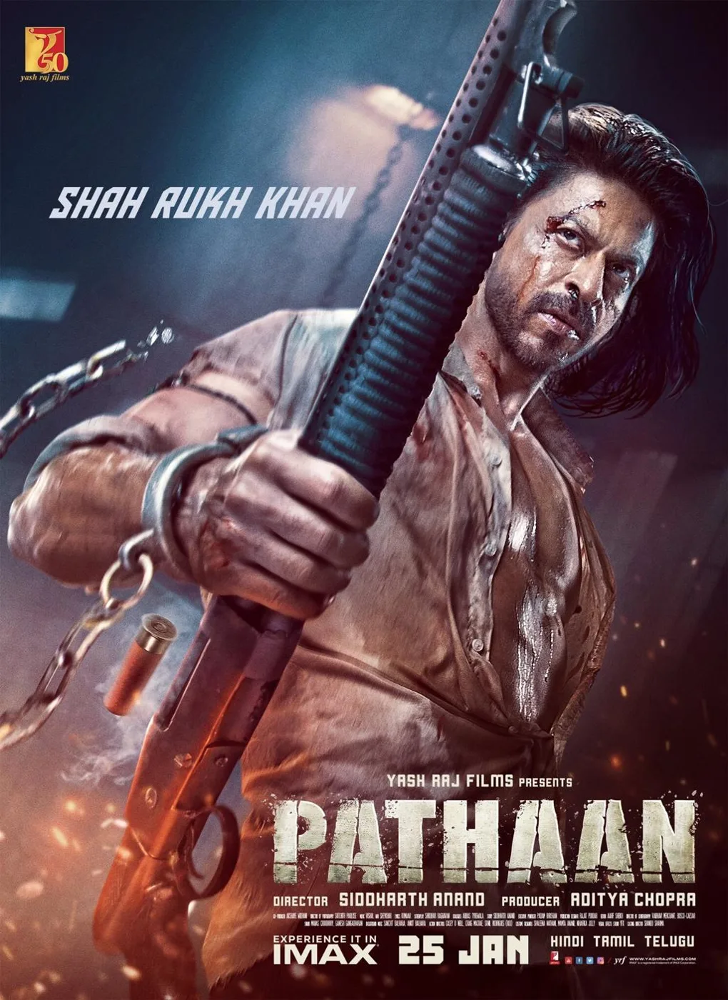
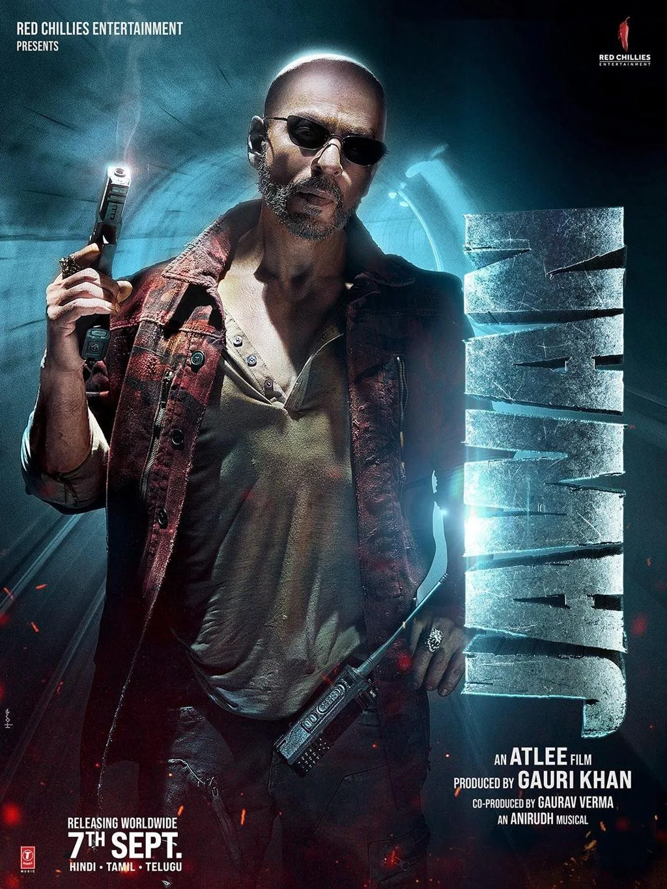
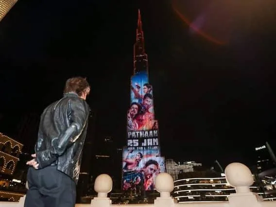
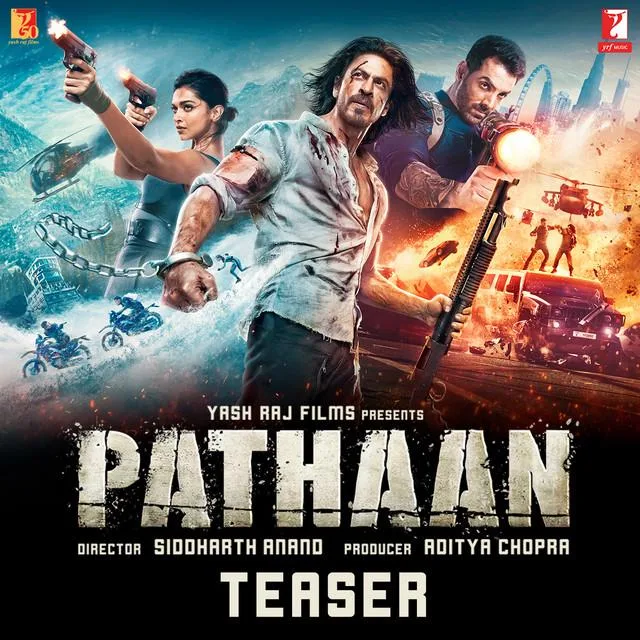
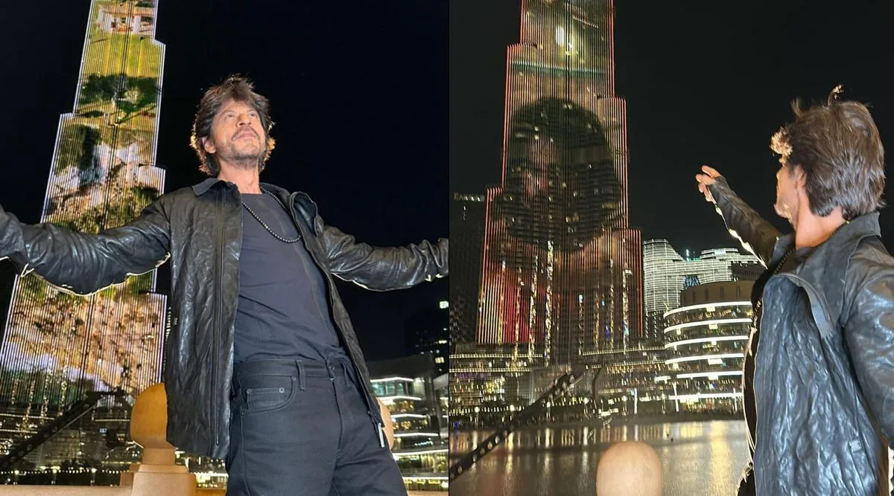
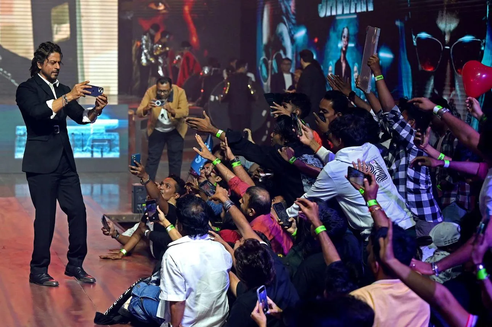
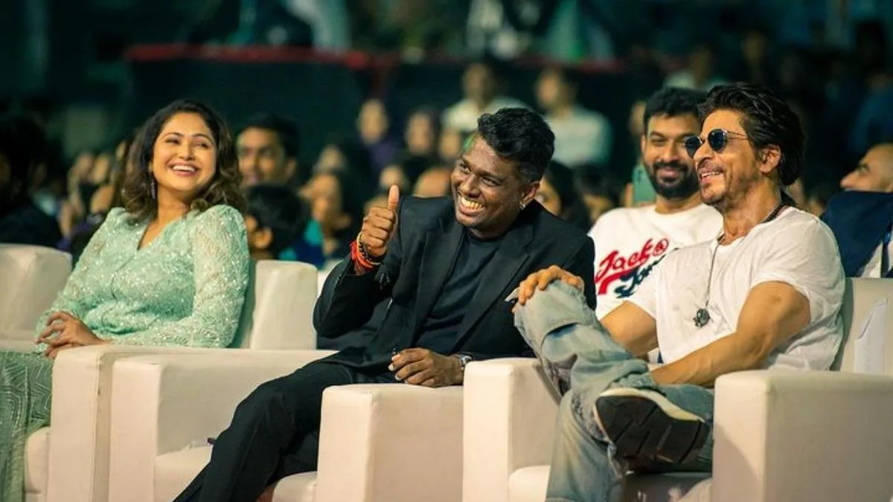

The Final Thesis · section 10 of 92
ACT II — THE RUPTURE, THE RESURRECTION, AND THE NEW KINGDOM
7. ZERO to Pathaan: the gap becomes the story



4
The first major shift after ZERO is not that Khan stopped marketing films. It is that the marketing model associated with him changed dramatically.
The 2023 campaigns became an industry case study in a different kind of power: fewer conventional interviews and press conferences, greater control of the narrative, strategically timed content, and a star whose public appearances and social posts could themselves become events.
The Hollywood Reporter India described PATHAAN as a campaign that helped establish this post-pandemic approach to Bollywood marketing: a teaser, songs, and a trailer released relatively close to the film's release, no conventional on-ground promotional events in India, and controlled interviews released through official channels.

THR India
The paradox is fascinating:
The man who once invited audiences to move a virtual train to unlock a film trailer returned with a marketing strategy in which the absence of conventional promotion became part of the promotion itself.
That is not a return to the exact Chennai Express model. It is a different form of digital and media control.
8. PATHAAN: the comeback campaign that turned silence into an asset



4
Pathaan's marketing was distinctive in three ways.
1. The absence of conventional publicity became part of the campaign
YRF did not rely on a conventional India-wide press tour, a succession of interviews, and daily media appearances. It released controlled content through its official channels, with the teaser, songs, and trailer building anticipation in a compressed window. Industry reporting described the strategy as a departure from the conventional Bollywood promotional cycle.
THR India
+1
2. The audience was already watching
The controversy and boycott calls surrounding the film generated a high level of public attention before release. The campaign's limited public commentary did not eliminate the conversation; it left much of the conversation to unfold through news coverage, fan networks, and social media.
The important marketing distinction is that a brand can exercise narrative control by deciding what it releases, when it releases it, and which channels it uses. This is different from inventing an interactive digital experience.
3. The film became the event
The official teaser, songs, trailer, and release itself became the central campaign assets. Pathaan was also positioned within YRF's Spy Universe, giving it a larger franchise context rather than treating it as an isolated film.
Siddharth Anand - YouTube
Benchmark finding: Pathaan is a major example of strategic restraint and controlled publicity. It demonstrates how the star's established audience and the scale of the film can make a relatively limited conventional promotional schedule generate extraordinary attention.
But its innovation is principally in publicity strategy, narrative control, timing, and franchise positioning—not a recreation of the Chennai Express train, game, karaoke, and fan-powered digital architecture.
9. JAWAN: mass participation, pan-India scale, and the star as a digital event


5
Jawan's campaign built on the attention generated by Pathaan, but its scale and presentation were different.
| Campaign dimension | Jawan's documented approach |
|---|---|
| Star identity | Multiple Shah Rukh Khan looks and character identities created a strong visual vocabulary for trailers, posters, and social sharing. |
| Digital content | Teaser, preview, songs, trailer, and character-led promotional materials were released through official channels. |
| Pan-India positioning | The collaboration with Atlee, the multi-language release, and the participation of major South Indian stars and artists supported a broader national audience. |
| Publicity events | The Chennai audio launch and Mumbai pre-release event were major live promotional moments. |
| Audience engagement | Fans amplified the character looks, dialogues, songs, and promotional assets through social networks and fan communities. |
The marketing was designed around Jawan's mass-action identity and its pan-India positioning. Unlike Pathaan's restrained domestic publicity schedule, Jawan included prominent promotional events, including the Chennai audio launch and a large Mumbai event.
Industry coverage of the 2023 promotional strategy describes this as a continuation of Khan's low-interview approach, with controlled media interactions and major launch events rather than the usual succession of individual press interviews.
India Today
What Jawan adds to the benchmark
Jawan shows the power of the star as a distributed media event. A single look, song, dialogue, or appearance can be repurposed by thousands of fan accounts and media channels.
However, that is a different kind of participation from Chennai Express. In Chennai Express, fans' actions were integrated into the mechanics of a digital product. In Jawan, the publicly documented fan activity was largely driven by sharing, remixing, discussing, and amplifying the film's content.
This distinction becomes central to the larger thesis: Khan's reach may have expanded enormously even as the form of his digital marketing became more dependent on content and audience amplification.
10. DUNKI: the return to storytelling, emotion, and the global audience


6
Dunki introduced a different rhythm.
The campaign's "Drop" format turned the release of promotional content into a continuing sequence. The first drop was released on Khan's birthday, November 2, 2023, and was followed by song releases, the trailer, and further promotional material.
India Today
+1
The official Red Chillies Entertainment channel described the first drop as the introduction to the film's world and its journey of friendship, dreams, and home.
21st Dec 2023 - YouTube
Dunki's Dubai promotional event also extended the campaign into a major international setting, connecting the film's emotional and migration-related themes with an audience beyond India.
What Dunki adds
Dunki demonstrates that the 2023 resurgence was not exclusively built around action, spectacle, or a single screen persona. It also worked through:
Episodic content releases.
The combination of music, emotional storytelling, and star > communication.
International promotional events.
The contrast between Jawan's mass-action identity and Dunki's > human and emotional narrative.
Together, Pathaan, Jawan, and Dunki created a three-film year with distinct genres and campaign identities.
The larger change: in 2013, digital technology was a mechanism through which audiences helped construct a campaign experience. In 2023, the film, the star, and the controlled release of content were themselves the principal event.
That is a striking evolution in marketing power, even if it is not the same kind of innovation.